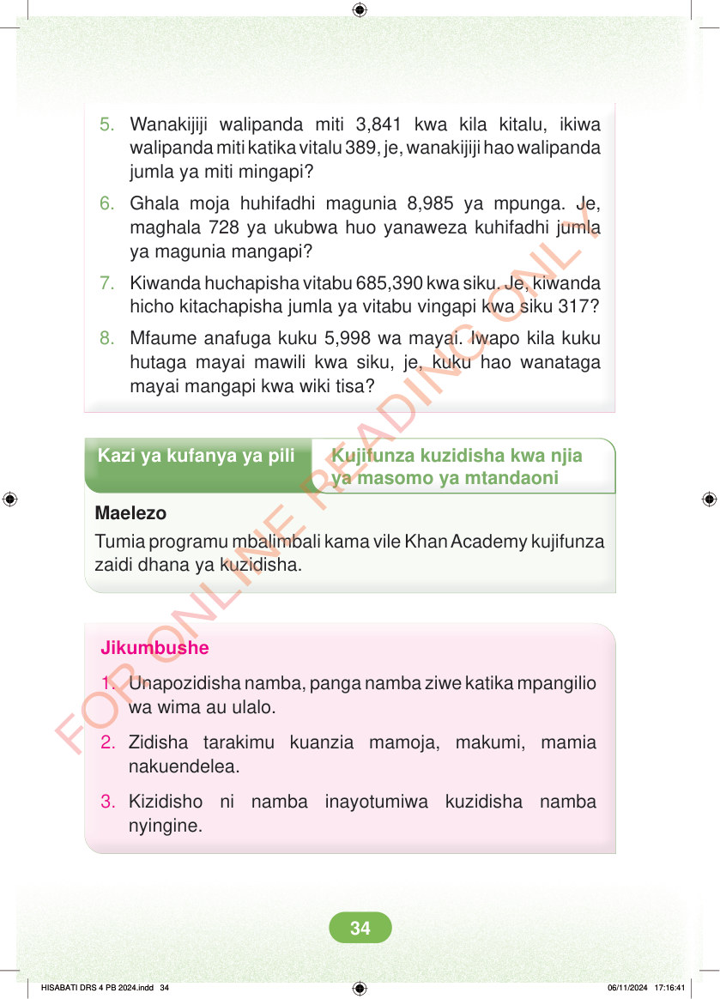

<!DOCTYPE html>
<html lang="sw-TZ"><head><meta charset="utf-8"><meta name="viewport" content="width=device-width,initial-scale=1">
<title>Hisabati: Kitabu cha Mwanafunzi Darasa la Nne</title>
<meta name="title-id" content="pg040_sec001"><meta name="page-section-id" content="41">
<link href="./content/tailwind_output.css" rel="stylesheet"><link href="./assets/libs/fontawesome/css/all.min.css" rel="stylesheet"><link href="./assets/fonts.css" rel="stylesheet">
<style>body{margin:0;background:#eef1ed}main{width:100%;display:flex;justify-content:center;padding:1rem 1rem 5rem;box-sizing:border-box}#content{width:100%;display:flex;justify-content:center}.pdf-page{position:relative;width:min(calc(100vw - 2rem),56rem);aspect-ratio:540.8980102539062/750.6610107421875;background:white;box-shadow:0 4px 24px #0002;overflow:hidden}.pdf-page img{position:absolute;inset:0;width:100%;height:100%;object-fit:fill}</style>
</head><body><main><h1 class="sr-only" id="page-heading">Ukurasa wa 40</h1><div id="content" class="opacity-0"><section role="article" data-section-type="pdf_accessible_page" data-section-id="pg040_sec001" aria-labelledby="page-heading" class="pdf-page"><p class="sr-only" data-id="pg040_gp001_tx001">5. Wanakijiji walipanda miti 3,841 kwa kila kitalu, ikiwa walipanda miti katika vitalu 389, je, wanakijiji hao walipanda jumla ya miti mingapi? 6. Ghala moja huhifadhi magunia 8,985 ya mpunga. Je, maghala 728 ya ukubwa huo yanaweza kuhifadhi jumla ya magunia mangapi? 7. Kiwanda huchapisha vitabu 685,390 kwa siku. Je, kiwanda hicho kitachapisha jumla ya vitabu vingapi kwa siku 317? 8. Mfaume anafuga kuku 5,998 wa mayai. Iwapo kila kuku hutaga mayai mawili kwa siku, je, kuku hao wanataga mayai mangapi kwa wiki tisa? Kazi ya kufanya ya pili Kujifunza kuzidisha kwa njia ya masomo ya mtandaoni Maelezo Tumia programu mbalimbali kama vile Khan Academy kujifunza zaidi dhana ya kuzidisha. Jikumbushe 1. Unapozidisha namba, panga namba ziwe katika mpangilio wa wima au ulalo. 2. Zidisha tarakimu kuanzia mamoja, makumi, mamia nakuendelea. 3. Kizidisho ni namba inayotumiwa kuzidisha namba nyingine. HISABATI DRS 4 PB 2024.indd 34 HISABATI DRS 4 PB 2024.indd 34 06/11/2024 17:16:41 06/11/2024 17:16:41</p></section></div></main><div class="relative z-50" id="interface-container"></div><div class="relative z-50" id="nav-container"></div><script src="./assets/offline-preloader.js?v=audiofix-20260824-1"></script><script src="./assets/scorm.js"></script><script src="./assets/base.bundle.local.js?v=audiofix-20260824-1"></script></body></html>